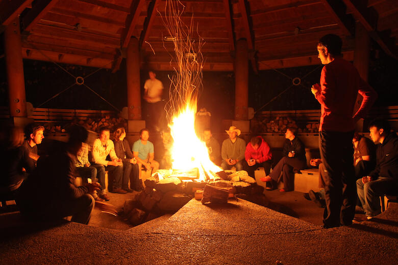
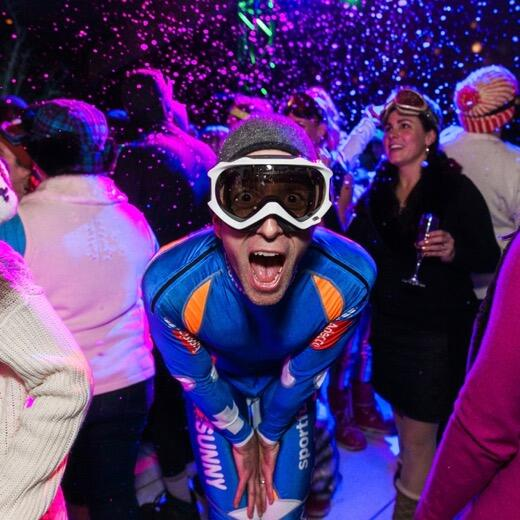
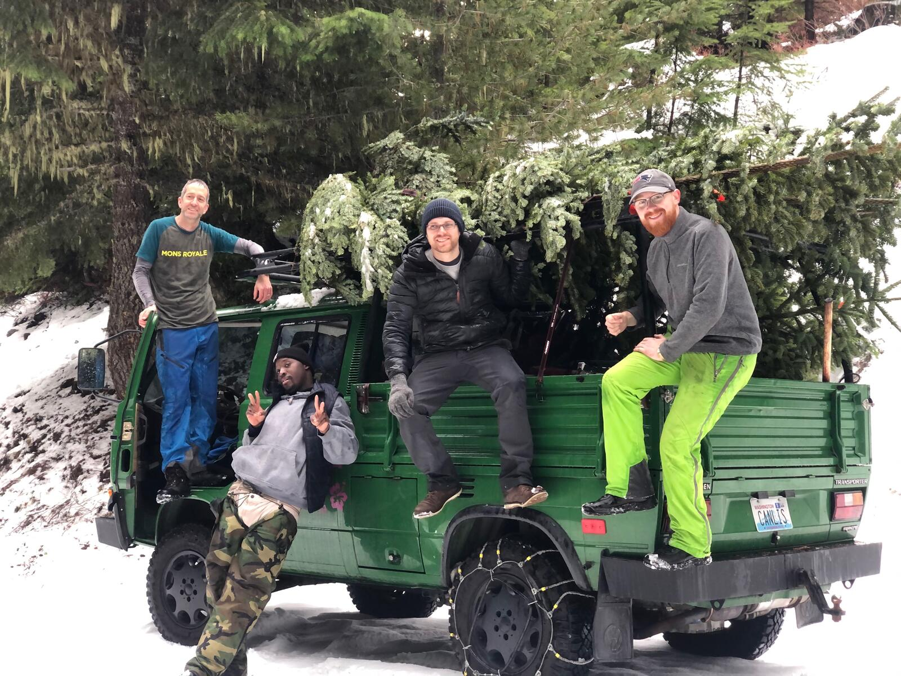
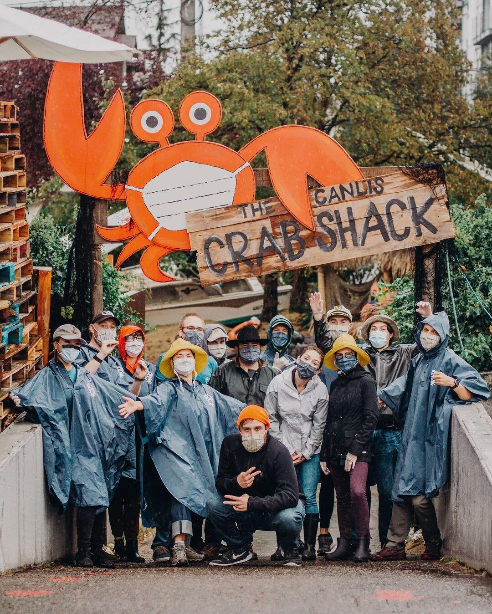
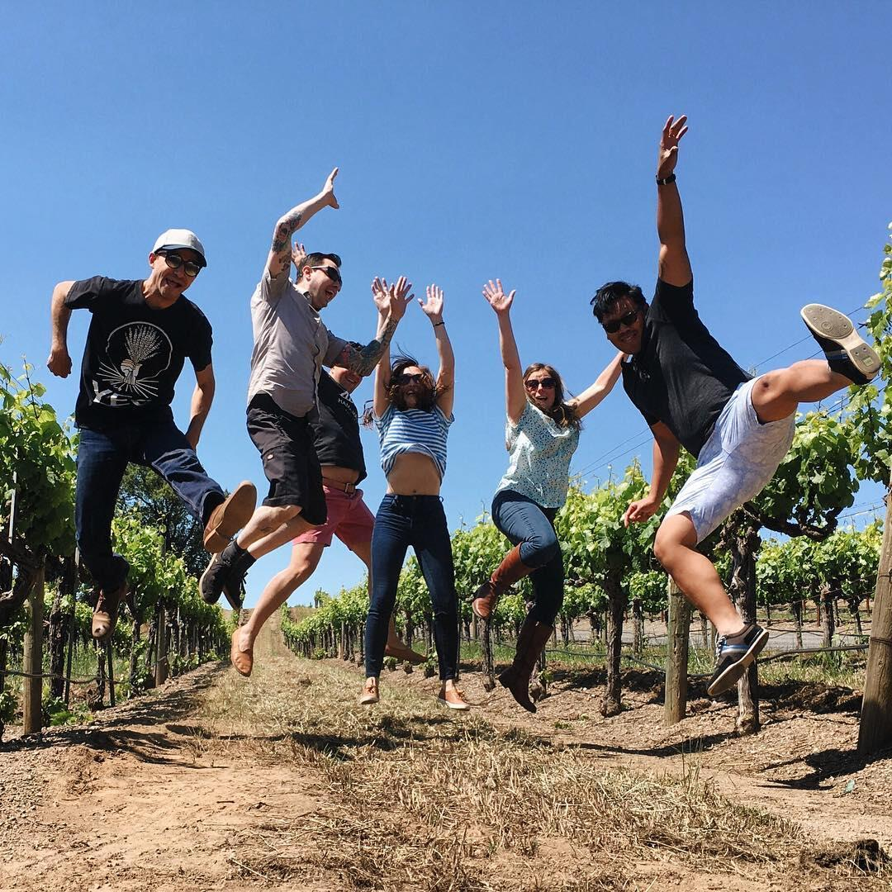
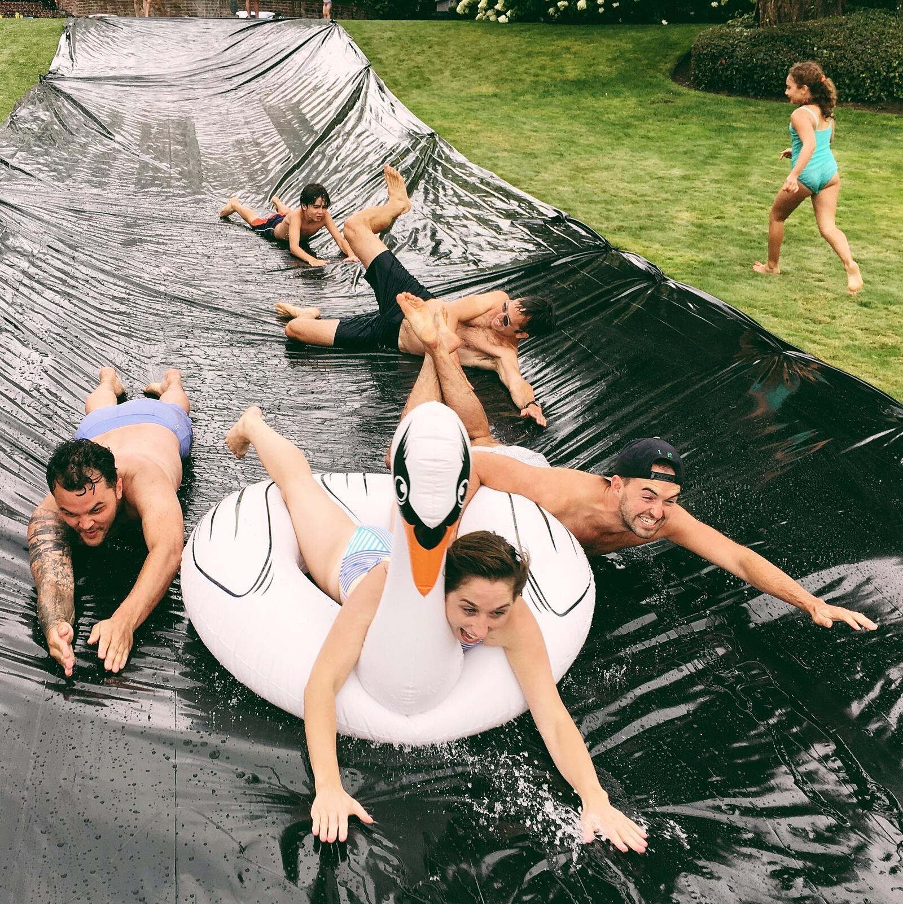

Striving to be the world's
most respected restaurant
and having a very good
time along the way.



Working at Canlis
We're honored you are interested in joining our team. To help that process, we recommend you read most of this entire website to figure out what makes us tick. We recommend thinking about how working here will help you become more of who you want to become, not what you want to become. We recommend taking the advice of your mother — whatever it was she said, try to remember — because it may help you get a job here.
To apply, send your resume and cover letter to Andy Pelander, our Director of People and Development, at work@canlis.com. And please don't skimp on the letter…
Describe a bit about who you are and why Canlis may be a good fit. Be specific, and feel free to have fun with it!
Roles we are currently hiring for:
Host / Reservationist – Starting Pay: $22-28/hour plus tips
Barista – Starting Pay: $24-27/hour plus tips
Valet – Starting Pay: $22/hour plus tips
Pastry Cook – Starting Pay: $23-25/hour plus tips
Line Cook – Starting Pay: $23-25/hour plus tips
All positions include available medical, dental, vision, and life insurance, 401K, PTO, and dining benefits.
You Matter
It might be different here from the last place you worked. Canlis is a place where employees are nurtured and grown. The standards here aren't any lower and the job is not any easier. We just don't compromise one another for the sake of getting our work done. It's not cool, and it turns out to be super counterproductive. We hire learners and we are learners ourselves. There is a humility inherent to this approach and we want you to have this…or at least to desperately want to have this. It is a requirement for employment.
Benefits
Employees have the option of enrolling in Canlis's health coverage after working for 60 days, at least 30 hours a week. Canlis offers medical, vision, dental, and life insurance. The cost of insurance is covered 75% by Canlis for hourly employees, 75% covered for any dependents, and 0% covered for spouses.
Canlis offers all eligible employees participation in a profit-sharing 401k program that matches 75% up to 8% of your pay. This is awesome. Ask around.
Canlis is closed Sundays, Mondays, and most holidays
Dining Privileges: Hourly employees dining at Canlis will receive 50% off all food and non-alcoholic beverages, starting as soon as they are hired. Additionally, after working at Canlis for at least six months, all employees receive a “dinner for two” (excluded alcohol) continuing education credit each calendar year to dine at the restaurant. The dinner for two credit may not be carried over into the subsequent calendar year. Dining discounts and credits cannot be used on Friday/Saturday or the month of December.
Canlis provides universal paid time off (PTO) to all employees, for use as paid vacation leave, sick leave, or safe leave. The Canlis PTO Policy for hourly employees is below:
Years worked at Canlis: 0-3 / Accrual Rate: 1.11 / PTO Days: 7
Years worked at Canlis: 4-5 / Accrual Rate: 1.6 / PTO Days: 10
Years worked at Canlis: 6-10 / Accrual Rate: 1.94 / PTO Days: 12
Years worked at Canlis: 11+ / Accrual Rate: 2.45 / PTO Days: 15
***Accrual is PTO hours per 40 hours worked.
We eat like royalty and celebrate taking time off. Oh, and we'll never serve brunch.
Our Mission: To inspire people to turn toward one another.
Our Vision: The Vision is our strategy to successfully accomplish the mission: We are striving to become the world's most respected restaurant. Our people are flourishing: growing emotionally, relationally, and professionally. We serve one another and our guests in ways that make us/them feel valued and restored.
Our Values: We value trustworthiness, generosity, and other-centeredness.


